Statistical Analysis
Lecture 11: Theories of Change
![]()
Introduction
From Regression to Causality
- Previous weeks: how to estimate relationships
- This week: how to identify causal relationships
- Key question: does \(X\) cause \(Y\), or just correlate?
- Tools: DAGs, potential outcomes, randomization
Public Policy Programs
Elements of a Program
A public policy program contains four elements:
- Inputs: time, money, people
- Activities: actions that convert inputs into outputs
- Outputs: tangible goods and services produced
- Outcomes: changes after the population uses outputs
\[\text{Inputs} \rightarrow \text{Activities} \rightarrow \text{Outputs} \rightarrow \text{Outcomes}\]
Example: Math Education Program
Inputs: budget, municipal training facilities
Activities: teacher training, textbook development
Outputs: 10,000 teachers trained, 1M textbooks delivered
Outcomes: students improve on final math exams
Measuring Outcomes
- Inputs, activities, outputs are directly measurable
- Outcomes are abstract and harder to measure
- We need indicators that:
- Reflect the concepts of interest
- Are feasible to collect
- Once measured, we care about change caused by the program
Outcomes and Programs
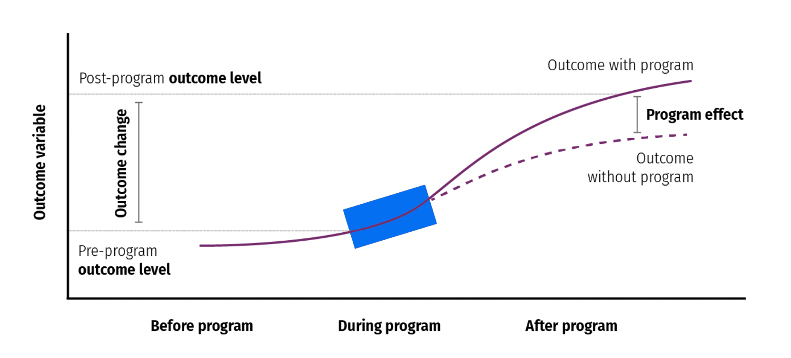
Types of Data
Experimental Data
- Researcher controls which units get treated
- Proving causation is easier
Observational Data
- No control over which units get treated
- Proving causation is harder
Causal Diagrams
What Is a DAG?
Directed Acyclic Graphs (DAGs):
- Directed: arrows point from cause to effect
- Acyclic: no cycles; arrows go one direction only
- Graph: a visual representation of relationships

Why Use DAGs?
- A DAG represents the theoretical model behind the data
- Shows what to control for to identify causal effects
- A causal effect is identified when confounders are removed
How to Draw a DAG
Four steps:
- List all relevant variables
- Simplify by grouping related variables
- Connect with arrows using domain knowledge
- Assess which paths need to be controlled
Step 1: List Variables
Example — factors affecting life expectancy:
- GDP
- Education
- Public services
- Health care
- Urbanization
- Conflict
Step 2: Simplify
Group related variables:
- Health care \(\rightarrow\) subsumed under Public services
- Crime rates \(\rightarrow\) subsumed under Conflict
Simplified: GDP, Education, Public services, Urbanization, Conflict
Steps 3–4: Connect Arrows
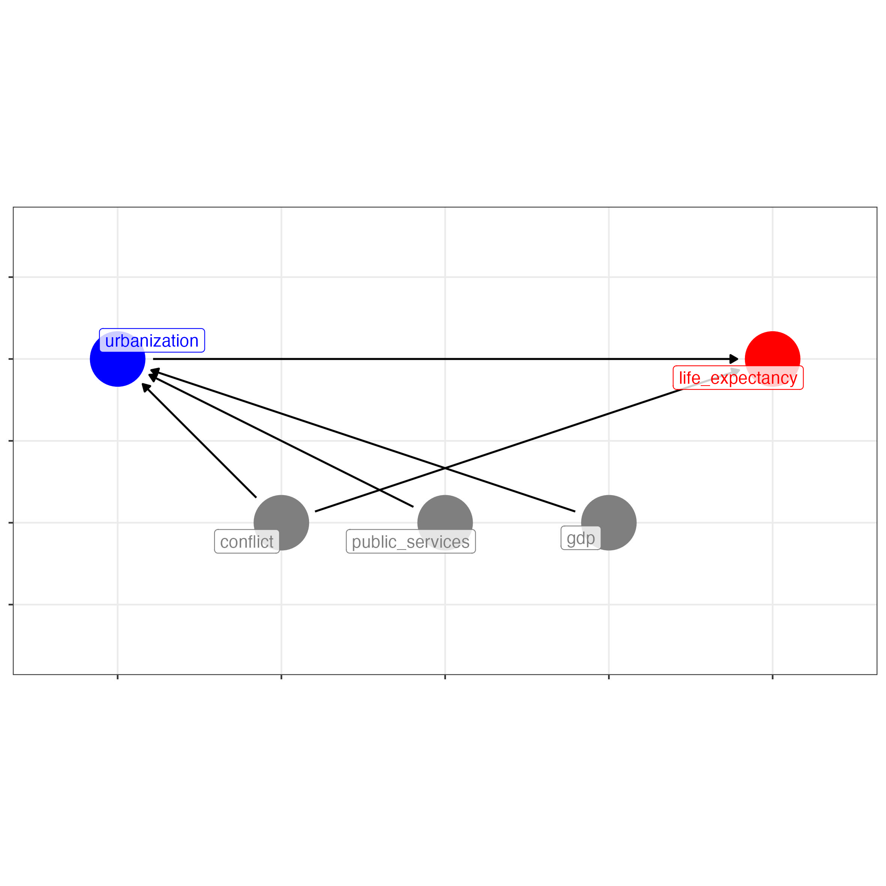
- GDP, conflict, public services \(\rightarrow\) urbanization
- Conflict also \(\rightarrow\) life expectancy directly
Causal Identification
- Nodes connected by arrows are correlated
- We care about the effect of urbanization on life expectancy
- A causal effect is identified when the \(X \rightarrow Y\) link is isolated
- DAG arrows help understand which paths to control
Types of Associations
Three Types of Associations
| Type | Role of \(Z\) | Problem? |
|---|---|---|
| Confounding | \(Z\) causes both \(X\) and \(Y\) | Yes |
| Collision | \(X\) and \(Y\) both cause \(Z\) | Yes |
| Mediation | \(X \rightarrow Z \rightarrow Y\) | Helpful |
Confounding
- \(Z\) causes both \(X\) and \(Y\)
- \(Z\) confounds the relationship between \(X\) and \(Y\)
- The \(X \rightarrow Y\) relationship is not identified
Confounding Example
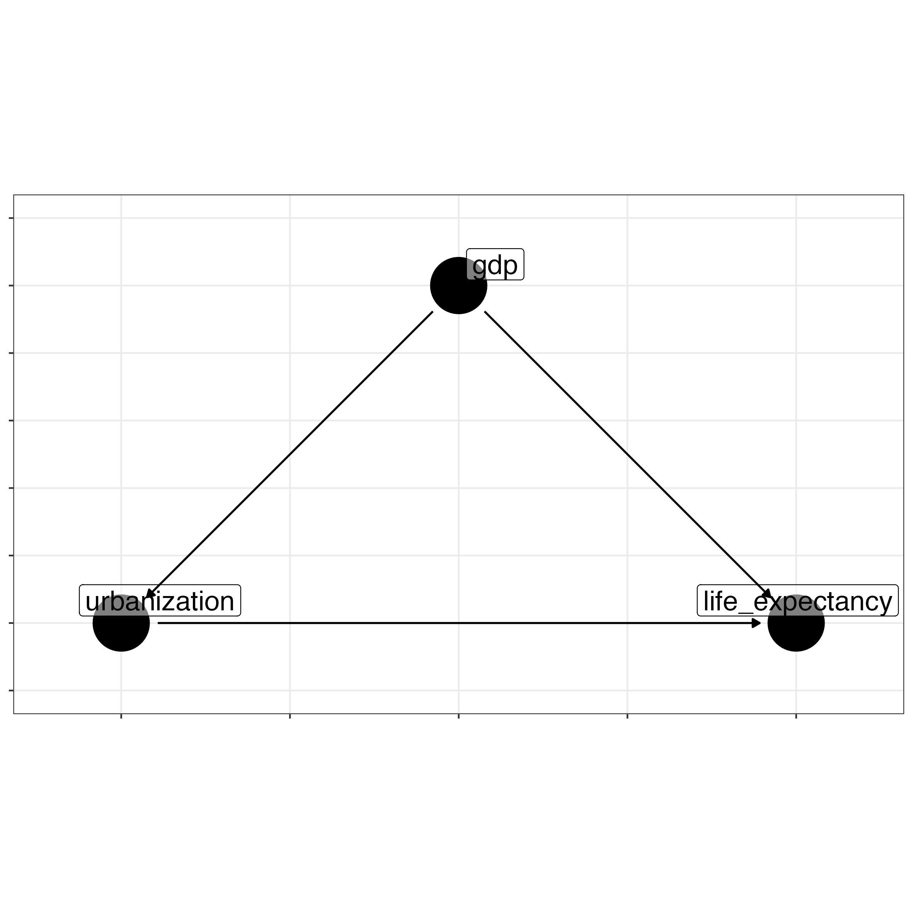
- GDP causes both urbanization and life expectancy
- GDP confounds the urbanization \(\rightarrow\) life expectancy link
- Without controlling for GDP, the effect is biased
Confounding: Solutions
- Include the confounder as a control in the regression
- Matching: pair treated/untreated with similar \(Z\)
- Stratifying: analyze within levels of \(Z\)
- Most common approach: add \(Z\) to the regression
Confounding in Practice
Confounding: The Coefficient Drops
- Bivariate urbanization effect: 0.247
- Multivariate urbanization effect: 0.055
- The coefficient drops after controlling for GDP
- GDP was inflating the apparent urbanization effect
- This is what confounding looks like in practice
Confounding: Visualized
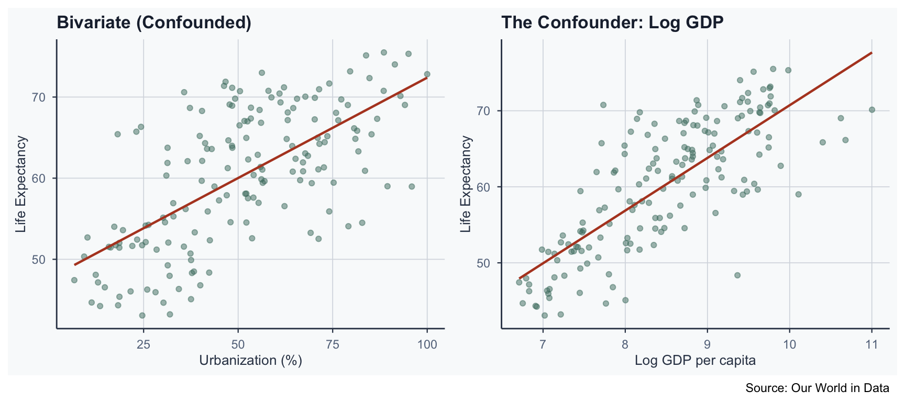
Collision
- \(X\) and \(Y\) both cause \(Z\) (the collider)
- Controlling for \(Z\) creates a spurious association
Collision Example
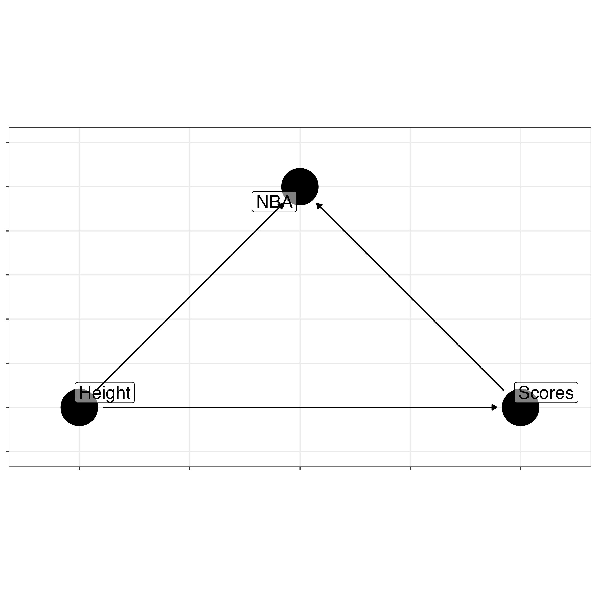
- Height and scoring both cause NBA recruitment
- Controlling for NBA status creates a false link
Collision: Solutions
- Collect additional data beyond the collider group
- Include both NBA and non-NBA players
- Restrict the sample to avoid conditioning on \(Z\)
- Analyze only non-NBA players
- Key rule: do not control for colliders
Mediation
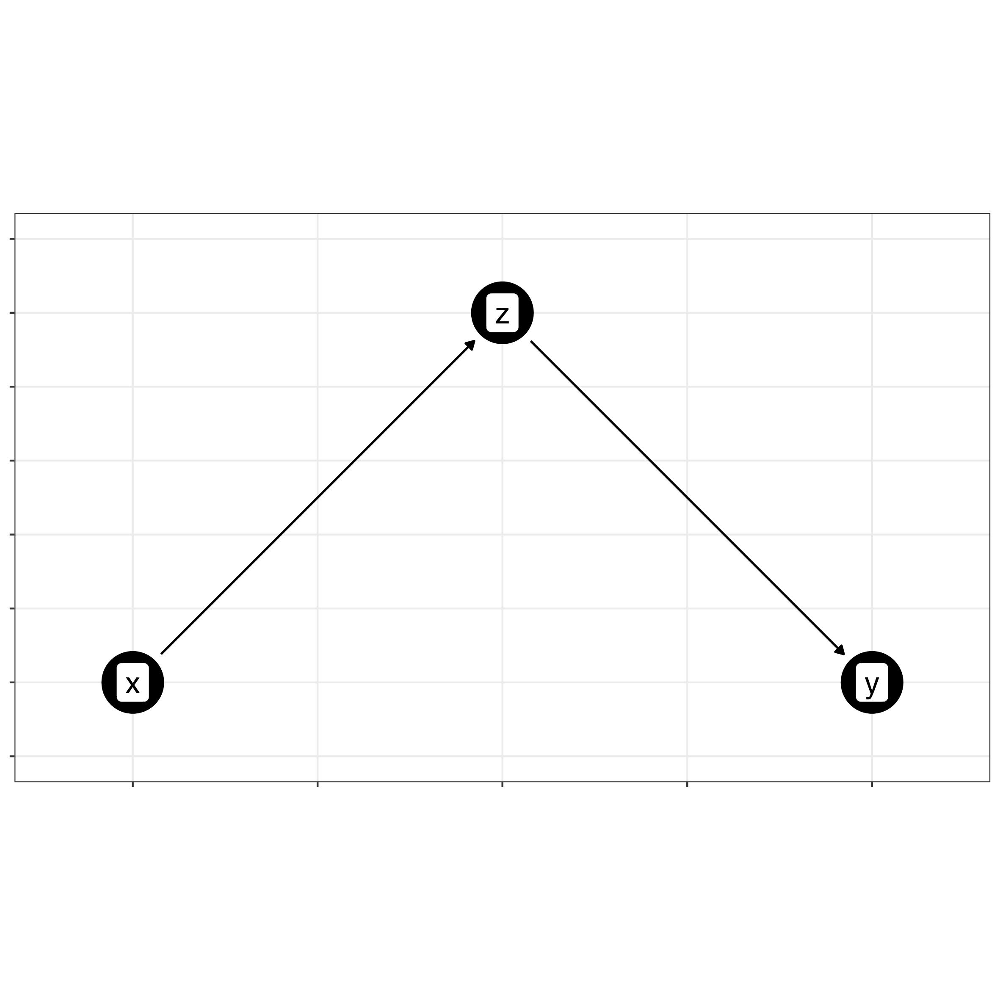
- \(X\) causes \(Z\), and \(Z\) causes \(Y\)
- \(Z\) is a mediator on the causal path
Mediation Example
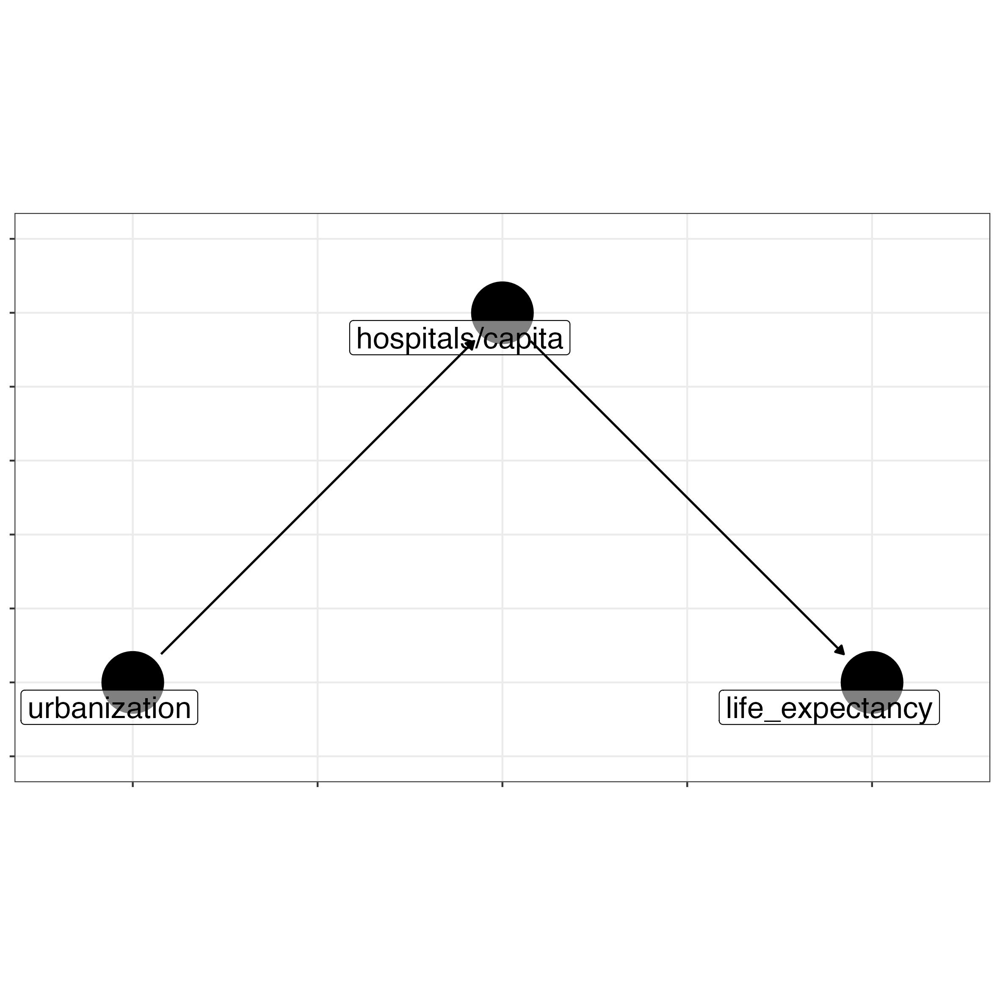
- Urbanization \(\rightarrow\) hospitals/capita \(\rightarrow\) life expectancy
- Hospitals mediate the urbanization effect
Testing for Mediation
Run four regressions:
- \(Y = \beta_0 + \beta_1 X + \epsilon\)
- \(M = \beta_0 + \beta_1 X + \epsilon\)
- \(Y = \beta_0 + \beta_1 M + \epsilon\)
- \(Y = \beta_0 + \beta_1 X + \beta_2 M + \epsilon\)
- If \(X\) becomes insignificant in (4): full mediation
- If \(X\) is reduced but significant: partial mediation
Full vs. Partial Mediation
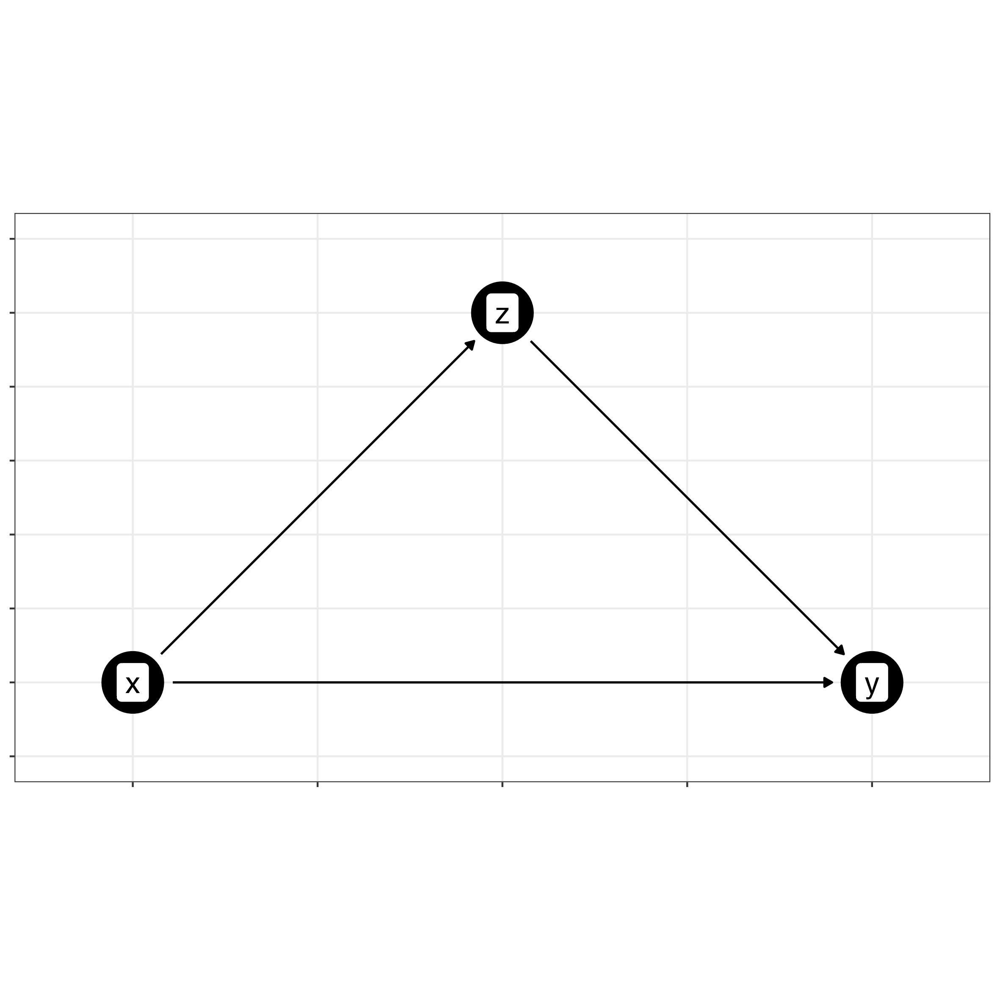
- Full: all of \(X\)’s effect passes through \(Z\)
- Partial: \(X\) affects \(Y\) directly and through \(Z\)
Summary of Variable Relationships
Causality
Causality Notation
We write the causal effect as:
\[E(Y \mid X = x)\]
“Expected value of \(Y\), given that \(X\) takes value \(x\)”
Examples:
- \(E(\text{life expectancy} \mid \text{+1 pct. pt. urbanization})\)
- \(E(\text{income} \mid \text{+1 year of education})\)
- \(E(\text{malaria risk} \mid \text{insecticide-treated net})\)
Causality in RCTs
In RCTs, we control who gets treated — confounders vanish
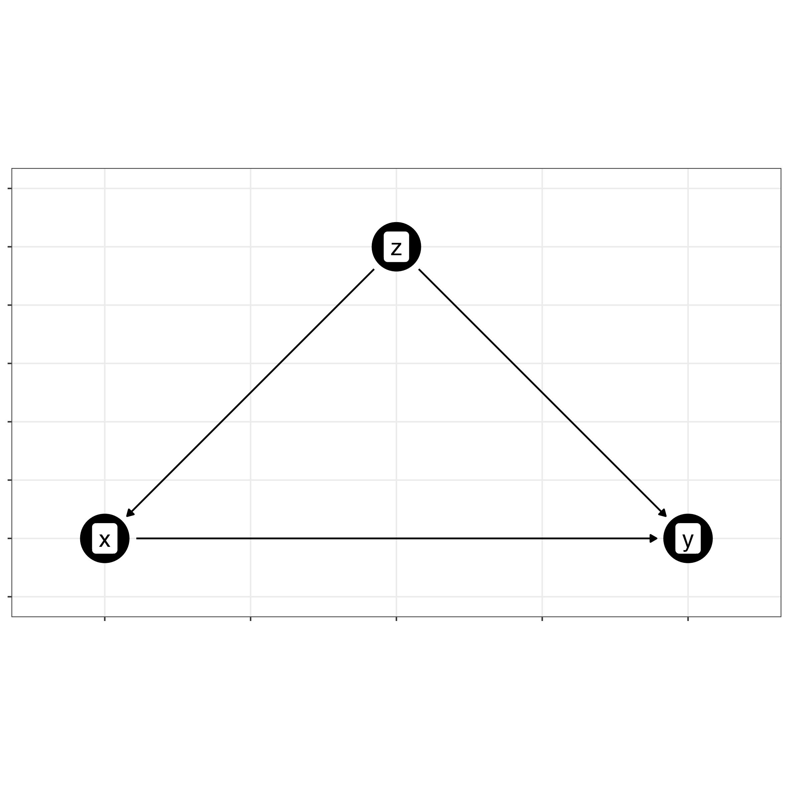
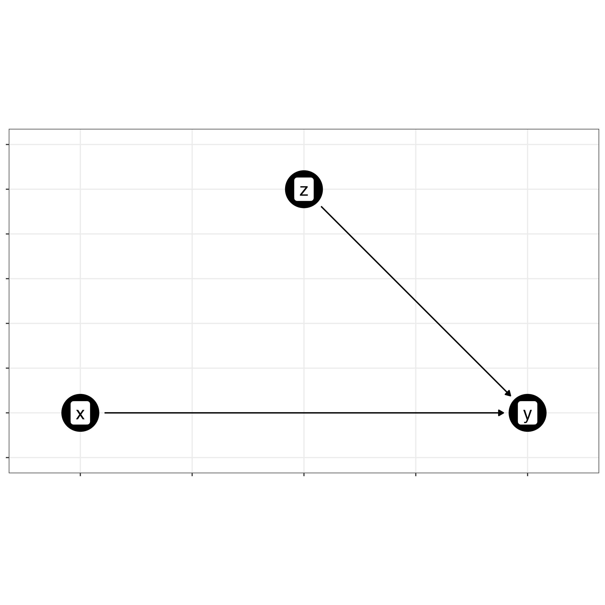
- Randomization breaks the arrow from \(Z\) to \(X\)
Correlation \(\neq\) Causation
\[P(Y \mid X = x) \neq P(Y \mid X)\]
- \(P(Y \mid X)\) gives a correlation, not a causal effect
- A simple regression captures association, not causation
- Causal identification requires controlling confounders or randomization
Potential Outcomes Framework
The Counterfactual Problem
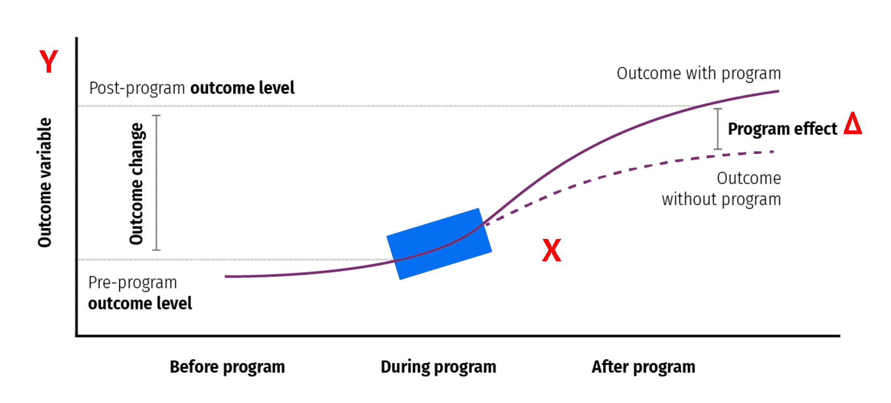
Potential Outcomes Notation
In a treatment vs. control setting:
\[\Delta = E(Y \mid X = 1) - E(Y \mid X = 0)\]
- \(Y^1_i\): outcome for individual \(i\) if treated
- \(Y^0_i\): outcome for individual \(i\) if untreated
- \(\Delta_i = Y^1_i - Y^0_i\): individual treatment effect
The Fundamental Problem
We can never observe both potential outcomes for one person:
\[\Delta_i = Y^1_i - \text{ ?}\]
- A patient either takes the pill or does not
- We cannot observe the counterfactual
- This is the fundamental problem of causal inference
What We Would Like
| Patient | Treatment | Outcome 1 | Outcome 2 |
|---|---|---|---|
| 1 | 1 | \(Y_1\) (Treated) | \(Y_1\) (Untreated) |
| 2 | 0 | \(Y_2\) (Treated) | \(Y_2\) (Untreated) |
| 3 | 1 | \(Y_3\) (Treated) | \(Y_3\) (Untreated) |
| 4 | 1 | \(Y_4\) (Treated) | \(Y_4\) (Untreated) |
| 5 | 0 | \(Y_5\) (Treated) | \(Y_5\) (Untreated) |
What We Actually Observe
| Patient | Treatment | Outcome 1 | Outcome 2 |
|---|---|---|---|
| 1 | 1 | \(Y_1\) (Treated) | ??? |
| 2 | 0 | ??? | \(Y_2\) (Untreated) |
| 3 | 1 | \(Y_3\) (Treated) | ??? |
| 4 | 1 | \(Y_4\) (Treated) | ??? |
| 5 | 0 | ??? | \(Y_5\) (Untreated) |
- We only see one potential outcome per person
- The other is the missing counterfactual
Average Treatment Effects
ATT and ATU
We compute group averages from what we observe:
Average Treatment on the Treated (ATT):
\[ATT = \bar{Y}_T \mid X = 1\]
Average Treatment on the Untreated (ATU):
\[ATU = \bar{Y}_U \mid X = 0\]
Average Treatment Effect (ATE)
Combine ATT and ATU:
\[ATE = ATT - ATU\]
- ATE estimates the average causal effect of treatment
- But it may contain selection bias
Selection Bias
\[ATE = (ATT - ATU) + \text{Selection Bias}\]
- Confounders and colliders cause selection bias
- In an RCT, selection bias \(= 0\) due to randomization
- Without randomization, ATE \(\neq\) true causal effect
Example: Bocconi vs. JCU
Effect of graduating from Bocconi on monthly income?
| Student | Bocconi | Income |
|---|---|---|
| 1 | 1 | 2,400 |
| 2 | 0 | 2,000 |
| 3 | 1 | 2,500 |
| 4 | 1 | 2,800 |
| 5 | 0 | 2,100 |
| 6 | 0 | 2,000 |
| 7 | 0 | 2,200 |
Computing the ATE
\[ATT = \frac{2400 + 2500 + 2800}{3} \approx 2567\]
\[ATU = \frac{2000 + 2100 + 2000 + 2200}{4} = 2075\]
\[ATE \approx 2567 - 2075 = 492\]
- But this is an observational study
- \(492 = (ATT - ATU) + \text{Selection Bias}\)
Selection Bias in the Example
Why might there be selection bias?
- Students choosing Bocconi may prefer finance/economics
- These fields tend to have higher incomes
- The “Bocconi effect” is confounded by career preferences
- We cannot isolate the true university effect
Randomization
Why Randomize?
Randomization makes treatment independent of potential outcomes:
\[X \perp\!\!\!\perp Y^1, Y^0\]
- Mean potential outcomes are identical across groups
- Selection bias \(= 0\)
- ATE equals the observed difference in group means
What Randomization Ensures
- Treated and untreated groups are comparable
- Same average height, income, education, etc.
- Differences in outcomes are caused by treatment
- Not by pre-existing differences between groups
Internal & External Validity
Internal validity: findings are reliable for the sample
External validity: findings generalize to the population
- RCTs have strong internal validity
- External validity depends on sample representativeness
Conclusion
Summary
- Programs: inputs \(\rightarrow\) activities \(\rightarrow\) outputs \(\rightarrow\) outcomes
- DAGs: directed acyclic graphs map causal structure
- Confounding: \(Z\) causes both \(X\) and \(Y\); control for \(Z\)
- Potential outcomes: the counterfactual we cannot observe
- ATE \(=\) ATT \(-\) ATU; may include selection bias
- Randomization: eliminates selection bias in RCTs
Popescu (JCU) Statistical Analysis Lecture 11: Theories of Change